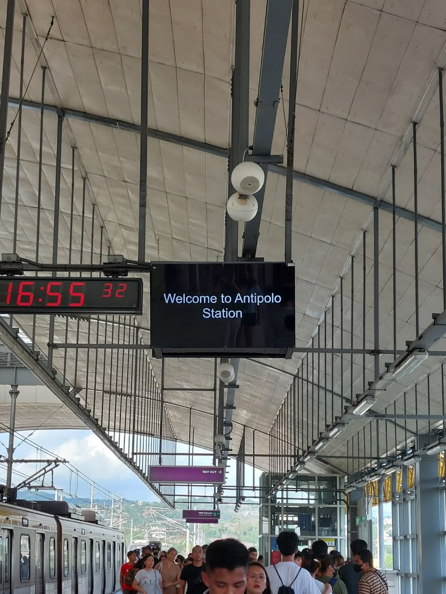

CRADLE OF PHILIPPINE ART


Pinto Art Museum in Antipolo City
PILGRIMAGE CITY
Experience the beauty of Antipolo City for its cool mountain breeze and breathtaking views overlooking Metro Manila.

Municipality in Rizal Province
With a total population of 924,888 as of 2022, Antipolo City has an average population density of 2,214.12/km2 (5,734.5/sq mi). Roman Catholics, Tagalog speakers, and Filipino/English speakers make up the majority of Antipoleos. The city’s literacy rate was 96.5 percent as per the 2000 Census.
Antipolo’s terrain may be characterized as being mostly hilly and mountainous, with the majority of the hills being located in the west and the majority of the mountains being located in the east as a part of the Sierra Madre Mountain Range. The northern and southern boundaries, as well as the center of the city, all have well-watered valleys. The western part of the study area has plateaus that are more than 200 meters above sea level, including the Poblacion and some of the Brgy. San Juan and Cupang.
View in Google Maps >>>
The city’s communities continue to practice various customs, rituals, and local arts that reflect its history, values, and close-knit way of life, offering insight into the unique identity and cultural continuity of the area. From age-old customs to vibrant local practices, the city invites visitors to experience the warmth, creativity, and unique identity of its people.

Suman

Hamaka

Paglilikas

Angtipulo Festival

Kalamay
Formerly known as Sumakah Festival
This is an annual activity that aims to promote the rich culture and tradition of the Antipoleños to the whole world as well as to establish camaraderie among the community and the city government. A Grand Parade, usually held on May 1, kicks-off the SuMaKaH (Suman, Mangga, Kasoy, Hamaka) Festival adorning the streets with street dancers and drum and lyre bands, all in their colorful costumes. After the parade, the crowd delights in a Street Dance Competition using the city’s official song, “Tayo Na Sa Antipolo!” Different shows and events are showcased in this month-long festivity prepared by the City Government.
The celebration includes a variety of activities such as colorful street dancing, parades, cultural performances, concerts, trade fairs, and community programs. Local groups, schools, and organizations participate in these events to showcase Antipolo’s traditions, arts, and local products. Through these activities, the Maytime Festival promotes tourism, strengthens cultural identity, and brings together residents and visitors in a month-long celebration of the city’s history and traditions.
View more of the festivals and traditions >>>

SUMAN

Suman is a famous delicacy from Antipolo made from glutinous rice cooked in coconut milk and wrapped in banana leaves. Known for its soft texture and lightly sweet flavor, it is often enjoyed with sugar or paired with ripe mangoes, making it a beloved pasalubong for visitors of the city.
KALAMAY

Kalamay Antipolo is a popular sweet delicacy made from glutinous rice flour, coconut milk, and brown sugar. Known for its rich, sticky texture and sweet caramel-like flavor, it is commonly sold as a pasalubong and enjoyed by visitors exploring the city.
The tourist attractions of Antipolo City showcase a unique blend of natural landscapes, scenic mountain views, and significant cultural landmarks in Rizal Province. Among its most notable sites is the Antipolo Cathedral, a well-known pilgrimage destination, along with various viewpoints and nature spots that offer overlooking views of Metro Manila and the surrounding areas.

Hinulugang Taktak

Mystical Cave

Antipolo Station

Luljeta Hanging Garden

Immaculate Conception Parish
Antipolo Cathedral, officially known as the International Shrine of Our Lady of Peace and Good Voyage, is one of the most important religious landmarks in Antipolo City. Located in Rizal Province, the cathedral is a major pilgrimage site visited by thousands of devotees each year, especially during the pilgrimage season when people travel to honor the image of the Virgin Mary known as the Our Lady of Peace and Good Voyage.
The church has a long history that dates back to the Spanish colonial period and has been rebuilt several times due to natural disasters and war. Today, the cathedral stands as a symbol of faith and devotion for many Filipinos, attracting pilgrims, tourists, and visitors who come to pray, attend mass, and experience the spiritual atmosphere of this historic shrine.
View more tourist attractions >>>
The area was originally inhabited by indigenous Dumagat and Tagalog communities before Spanish missionaries established settlements and introduced Christianity in the late 1500s. The town became widely known because of the image of the Virgin Mary brought from Acapulco in 1626, which is now enshrined in the Antipolo Cathedral and is called the Our Lady of Peace and Good Voyage.

During the Spanish era, Antipolo developed as an important religious center and pilgrimage destination. later became part of Rizal Province when the province was established in 1901 during the American colonial period. Over time, Antipolo grew from a small town into a developing urban area while still maintaining its cultural and religious significance. In 1998, Antipolo was officially declared a city, and today it is known as one of the major cities in the province, recognized for its history, faith traditions, and scenic location overlooking Metro Manila.
View more of the history of Antipolo >>>